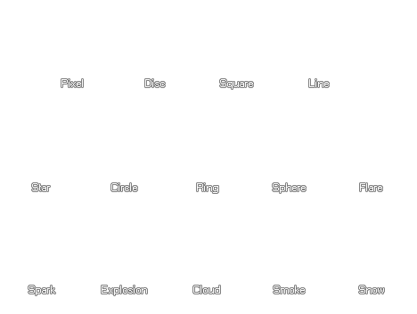

Particles are the graphic effects that can be created by the use of particle systems in a game. The particles that you define using these functions can be used in any system that you create
and the normal procedure would be to define all your particles once at the start of a game and store their index values in global variables. These global variables can then be used to burst,
emit or create particles at any time throughout the game. You can also create, use and then destroy particles as needed if memory is an issue or if you wish many different types but only at
specific points in your game. Whatever you choose, particles are a very versatile resource!
Particles need to be created and have their index stored in a variable so that all further particle routines can access them correctly. The following functions are used to create, check for, clear and destroy particle types:
Once you have created your particle type you should give it a shape. This can be one of the 14 built in shapes which are 64x64 pixel sprites with alpha blending, or you can use your own sprites which can be animated, static or use random sub-images. The following functions define the visual base shape of each particle:
The following image shows the 14 built in particle types that you can choose from: 
Once you have choosen the sprite for the particle type (either a default shape or your own) you can indicate the size and scale of it. The size can be specified as a range and all particles will be created with a size choosen from within the given range. The scale is the "base" value for the x and y axis scale of the particle before any size variations are added and the following functions are used to control these values:
Particles can also have an orientation and motion. As with most particle functions, the speed, direction and orientacion are resolved as a random value that is selected from a given range and can be set with the following functions:
Once you have the style and movement of your particles sorted out, you can then set their color and alpha values, both of which can be set as an absolute value during the whole lifespan of the particle, or as a scale of values that go from one to the other gradually. Note that there is also a special function that permits you to set the blending for particles and their surroundings, and this can be either normal or additive and gives some fantastic effects- The functions governing color, alpha and blending are:
Particles exist on-screen for a limited amount of time and this is called their their "lifetime". Particle lifetimes are measured in steps and (like previous functions) this is expressed as a range of values from which the particle will be given a specific lifetime. There are also a couple of interesting functions which can be used to make particles generate other particles, either each step or when they "die" (ie: Are removed from the screen), but be very careful with these functions as they can quickly create thousands of particles and crash the game! The functions that set lifetime and step or death emitting are as follows:
It is worth noting that creating particles through code can often be a laborous and time-consuming process due to the large number of parameters that can be changed and tweaked. For that
reason it is recommended that you search around and get a hold of some type of Particle Designer (or make one yourself!) to take the drudgery out of particle creation.